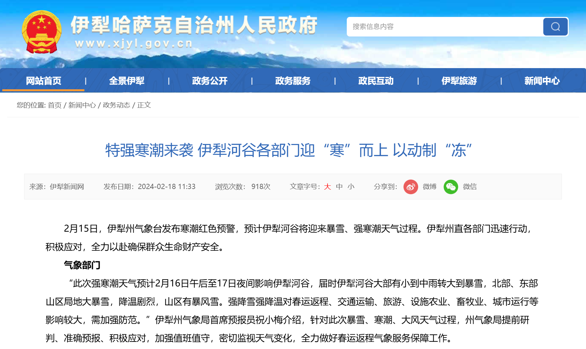
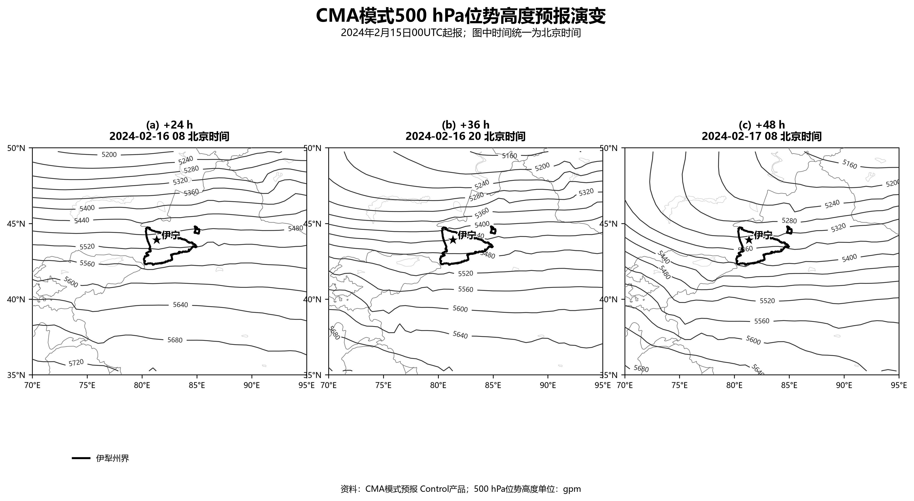
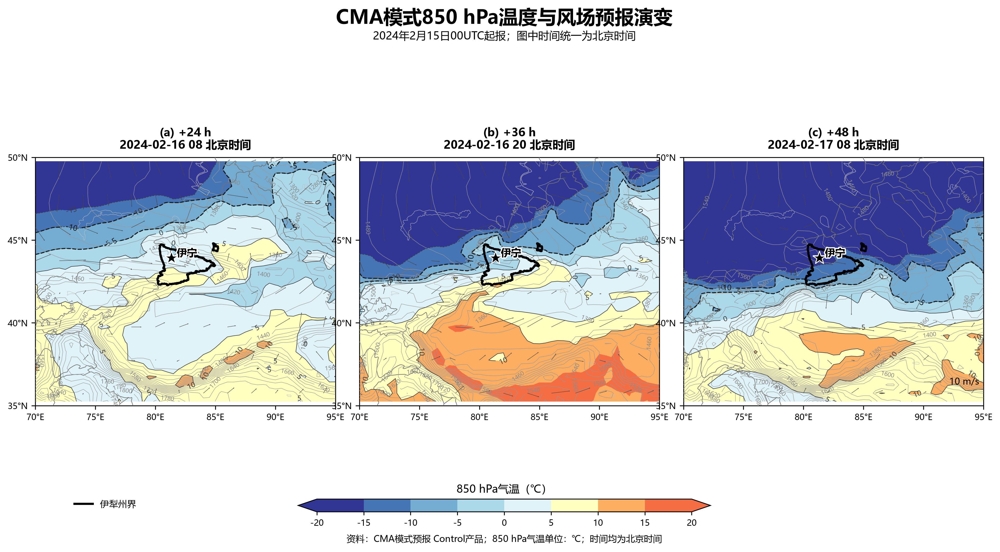
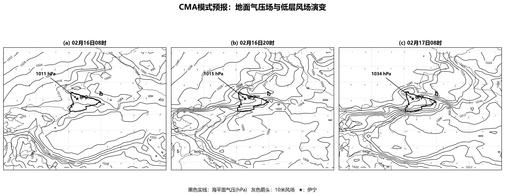
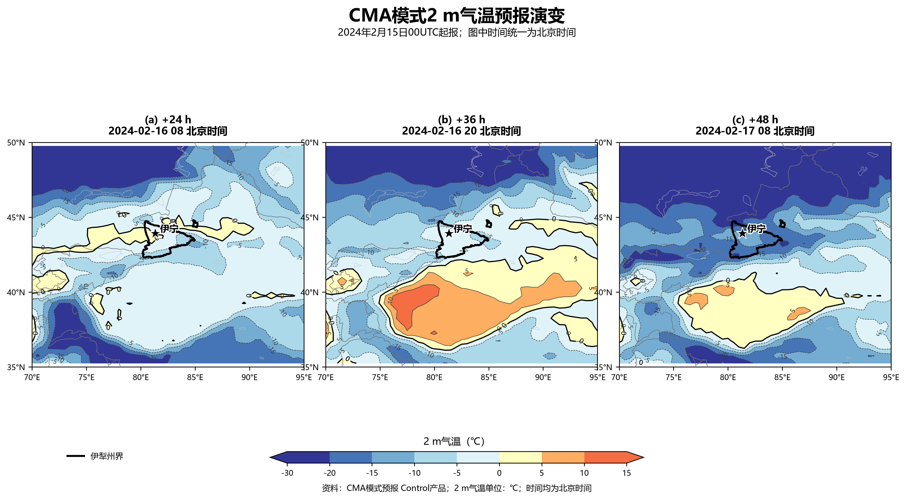
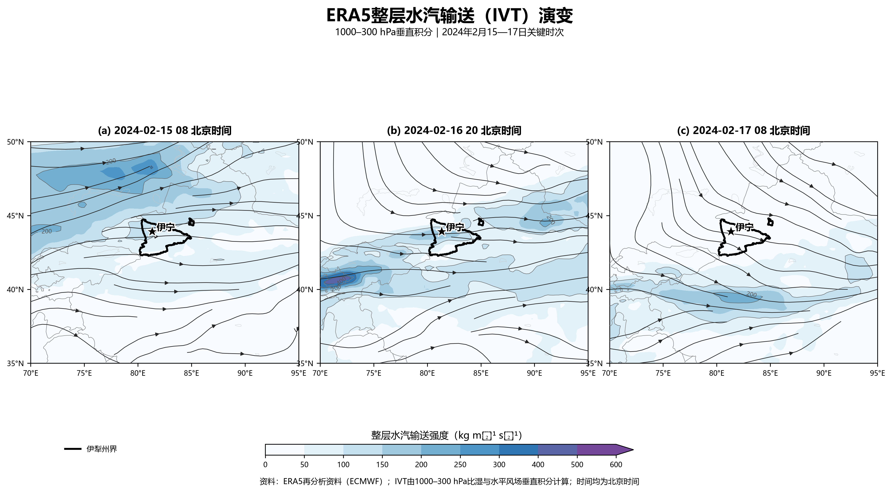
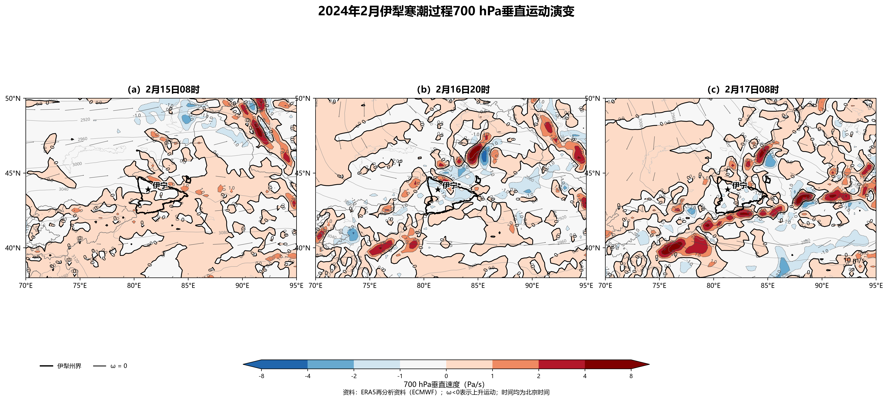
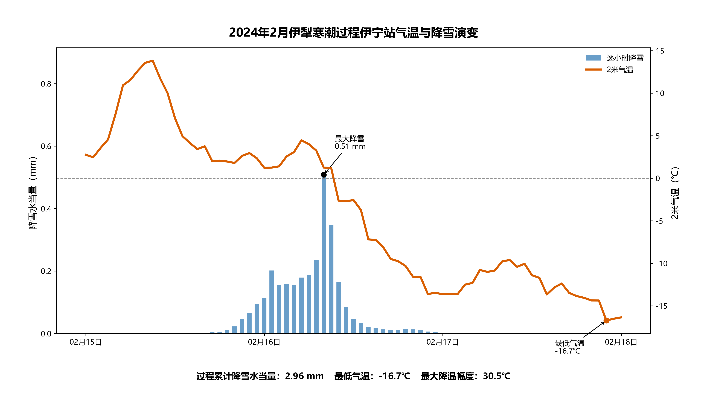

我的数据资料来源自欧洲天气预报第五代再分析资料和中国气象局数值预报模式资料
这次的寒潮发生在我的家乡伊犁，2024年2月16-17日。这是当时伊犁州气象台发布的红色寒潮预警，寒潮发生常常会伴随着降温、大风和暴雪，对于伊犁地区的农业、畜牧业、交通等造成严重危害

这是以北京时间2024年2月15日8点向后推测24、36、48小时的预报资料，在500hpa对流层中层自由大气非常适合观测大尺度环流天气形式，可以看出16日8点还是相对平直的西风气流，随着时间推移由于大气长波的调整，有一个槽向南伸展到新疆北部，伊犁位于槽后西北气流控制区域，有利于冷空气向南输送

850hpa离地面比较近，可以很好观测冷空气的发展趋势，这里可以看出冷空气来自西北方向，我国的冷空气源于新地岛西边的巴伦支海和东边的喀拉海以及冰岛以南的洋面上，2月17日8点温度将要降低约15℃。

这是地面气压变化图，明显看到伊犁地区地面气压升高，这与冷空气下沉堆积有关，冷空气主体到达后，冷高压逐渐建立并增强，伊犁地区受冷高压控制，地面气压明显升高。

这张2m气温变化降低图便佐证了以上冷空气的入侵造成的变化，昭苏、巩留等地山区气温要低于河谷地区气温

这三张是通过再分析资料分析当时地区的水汽来源，伊犁身处中亚腹地却被称为塞外江南，绿地覆盖面积最大，它东边的太平洋水汽会被太行山脉阻挡，南边印度洋水汽被喜马拉雅山脉阻挡，所谓春风不度玉门关形成温带大陆性气候，这里水汽来源西边大西洋水汽输送，通过黑海和里海补充水汽由西风环流输送而来

降雪少不了动力条件，700hpa是对流层低层和中层的链接层，接近成云制雨的区域，在16日20点和17日8点伊犁地区空气上升运动，上升运动膨胀对外做功冷却，容易使水汽达到露点温度凝结形成降雪

这是伊宁市温度和降雪实况，明显是有寒潮到来使温度降低约30℃，在16日12点左右达到降雪最大，该过程给当地居民生活带来了明显影响，我个人在当地学习生活期间也对此次强降温过程有较深感受。

实际过程中预报员肯定比我看的更详细，考虑的更多，他们先看最重要的数值模式预报资料数据，然后通过卫星和雷达观测云图和回波反射率判断降水，再看当地的地面自动站气象要素是否发生明显变化。
伊犁河谷的特殊地形也要被我们考虑，伊犁地区呈喇叭状向西开口，夹在北天山和南天山之间，不同地区的降雪情况肯定是不一样的，这种三面环山、西侧开口的地形结构，使伊犁既容易接收西风带水汽，又容易在冷空气入侵时形成通道效应；南北山区的地形抬升也会增强局地降雪。
综合来看，此次寒潮过程主要由高纬冷空气南下引起。500hPa长波槽的发展为冷空气入侵提供了大尺度环流背景，850hPa冷平流增强和地面冷高压建立造成明显降温。同时，西风带水汽输送以及伊犁河谷周围山地抬升作用，为降雪提供了水汽和动力条件 最后就是气象服务了，我之前也在霍尔果斯气象局实际过一段时间，气象服务工作是收官的一步，发布预警公告，发布微信小程序公众号，我也曾跑腿到政府机关送气象结果。
返回首页